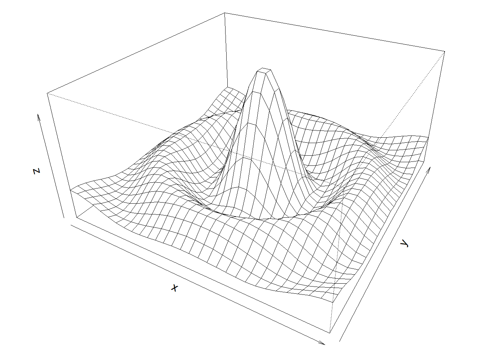
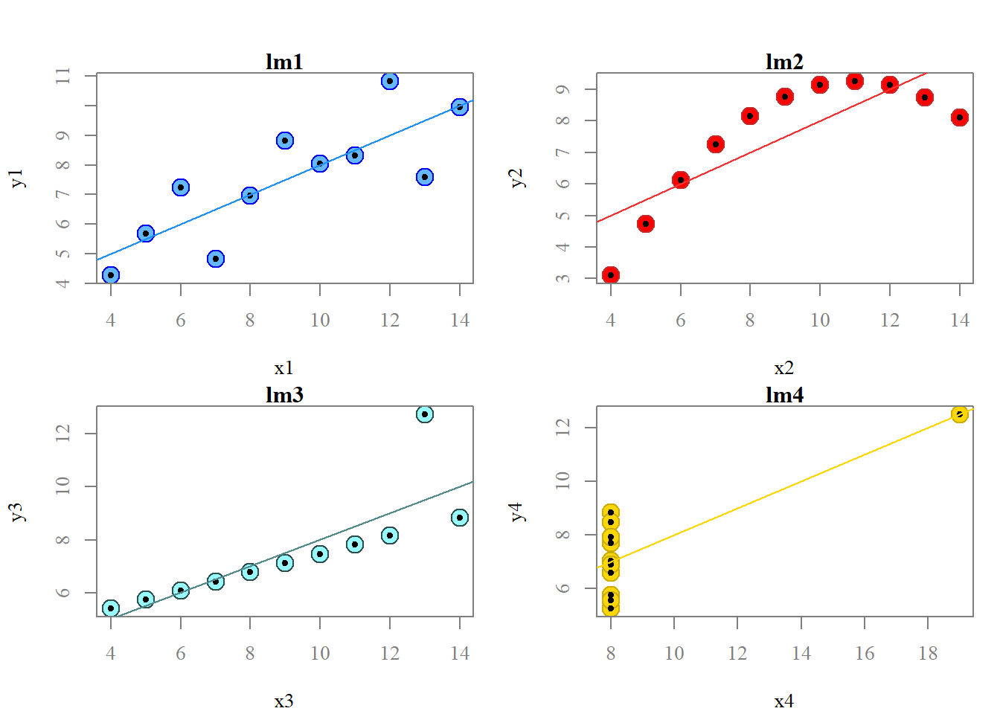

a. Choose one of the six charts and explain how it is configured by adding documentation to the codes.
### Paul Murrell's R examples (selected)# Persp# Prepare data for displaying# X coordinate values (30 values from -10 to 10)x <-seq(-10, 10, length=30)# Y coordinate values # (in this case exactly the same as X)y <- x# function to create a curve/volume from XY valuesf <-function(x,y) { r <-sqrt(x^2+y^2); 10*sin(r)/r }# calculate z matrix using the the above functionz <-outer(x, y, f)# ensure all z values are not na. NAs replaced by 1z[is.na(z)] <-1# 0.5 to include z axis labelpar(mar=c(0, 0.5, 0, 0), lwd=0.5)# draw the perspective (volume)persp(x, y, z, theta =30, phi =30,expand =0.5)

par(mar=c(5.1, 4.1, 4.1, 2.1), lwd=1)
2. Rerun anscombe01.R.
a. Compare the regression models
data(anscombe) colnames(anscombe)
[1] "x1" "x2" "x3" "x4" "y1" "y2" "y3" "y4"
summary(anscombe)
x1 x2 x3 x4 y1
Min. : 4.0 Min. : 4.0 Min. : 4.0 Min. : 8 Min. : 4.260
1st Qu.: 6.5 1st Qu.: 6.5 1st Qu.: 6.5 1st Qu.: 8 1st Qu.: 6.315
Median : 9.0 Median : 9.0 Median : 9.0 Median : 8 Median : 7.580
Mean : 9.0 Mean : 9.0 Mean : 9.0 Mean : 9 Mean : 7.501
3rd Qu.:11.5 3rd Qu.:11.5 3rd Qu.:11.5 3rd Qu.: 8 3rd Qu.: 8.570
Max. :14.0 Max. :14.0 Max. :14.0 Max. :19 Max. :10.840
y2 y3 y4
Min. :3.100 Min. : 5.39 Min. : 5.250
1st Qu.:6.695 1st Qu.: 6.25 1st Qu.: 6.170
Median :8.140 Median : 7.11 Median : 7.040
Mean :7.501 Mean : 7.50 Mean : 7.501
3rd Qu.:8.950 3rd Qu.: 7.98 3rd Qu.: 8.190
Max. :9.260 Max. :12.74 Max. :12.500
# calculate regression modelslm1 <-lm(y1 ~ x1, data=anscombe)lm2 <-lm(y2 ~ x2, data=anscombe)lm3 <-lm(y3 ~ x3, data=anscombe)lm4 <-lm(y4 ~ x4, data=anscombe)# list summaries of the four modelssummary(lm1)
Call:
lm(formula = y1 ~ x1, data = anscombe)
Residuals:
Min 1Q Median 3Q Max
-1.92127 -0.45577 -0.04136 0.70941 1.83882
Coefficients:
Estimate Std. Error t value Pr(>|t|)
(Intercept) 3.0001 1.1247 2.667 0.02573 *
x1 0.5001 0.1179 4.241 0.00217 **
---
Signif. codes: 0 '***' 0.001 '**' 0.01 '*' 0.05 '.' 0.1 ' ' 1
Residual standard error: 1.237 on 9 degrees of freedom
Multiple R-squared: 0.6665, Adjusted R-squared: 0.6295
F-statistic: 17.99 on 1 and 9 DF, p-value: 0.00217
summary(lm2)
Call:
lm(formula = y2 ~ x2, data = anscombe)
Residuals:
Min 1Q Median 3Q Max
-1.9009 -0.7609 0.1291 0.9491 1.2691
Coefficients:
Estimate Std. Error t value Pr(>|t|)
(Intercept) 3.001 1.125 2.667 0.02576 *
x2 0.500 0.118 4.239 0.00218 **
---
Signif. codes: 0 '***' 0.001 '**' 0.01 '*' 0.05 '.' 0.1 ' ' 1
Residual standard error: 1.237 on 9 degrees of freedom
Multiple R-squared: 0.6662, Adjusted R-squared: 0.6292
F-statistic: 17.97 on 1 and 9 DF, p-value: 0.002179
summary(lm3)
Call:
lm(formula = y3 ~ x3, data = anscombe)
Residuals:
Min 1Q Median 3Q Max
-1.1586 -0.6146 -0.2303 0.1540 3.2411
Coefficients:
Estimate Std. Error t value Pr(>|t|)
(Intercept) 3.0025 1.1245 2.670 0.02562 *
x3 0.4997 0.1179 4.239 0.00218 **
---
Signif. codes: 0 '***' 0.001 '**' 0.01 '*' 0.05 '.' 0.1 ' ' 1
Residual standard error: 1.236 on 9 degrees of freedom
Multiple R-squared: 0.6663, Adjusted R-squared: 0.6292
F-statistic: 17.97 on 1 and 9 DF, p-value: 0.002176
summary(lm4)
Call:
lm(formula = y4 ~ x4, data = anscombe)
Residuals:
Min 1Q Median 3Q Max
-1.751 -0.831 0.000 0.809 1.839
Coefficients:
Estimate Std. Error t value Pr(>|t|)
(Intercept) 3.0017 1.1239 2.671 0.02559 *
x4 0.4999 0.1178 4.243 0.00216 **
---
Signif. codes: 0 '***' 0.001 '**' 0.01 '*' 0.05 '.' 0.1 ' ' 1
Residual standard error: 1.236 on 9 degrees of freedom
Multiple R-squared: 0.6667, Adjusted R-squared: 0.6297
F-statistic: 18 on 1 and 9 DF, p-value: 0.002165
op <-par(mfrow =c(2, 2), mar =0.1+c(4,4,1,1), oma =c(0, 0, 2, 0))# plot regression modelsplot(anscombe$x1,anscombe$y1, xlab='x1', ylab='y1', main='lm1')abline(coefficients(lm1))plot(anscombe$x2,anscombe$y2, xlab='x2', ylab='y2', main='lm2')abline(coefficients(lm2))plot(anscombe$x3,anscombe$y3, xlab='x3', ylab='y3', main='lm3')abline(coefficients(lm3))plot(anscombe$x4,anscombe$y4, xlab='x4', ylab='y4', main='lm4')abline(coefficients(lm4))
Comment:
All models (lm1, lm2, lm3, lm4) show the value of 0.66 for Multiple R Squared
All models (lm1, lm2, lm3, lm4) show the value of 0.62 for Adjusted R Square. The 62% of the variation in dependent variable can be explained by the independent variables for each of the four models.
Graphics show models are different. Fourth model lm4 has outlier case(s).
Second model lm2 looks to be a polynomial curve.
b. Compare different ways to create the plots (e.g. changing colors, line types, plot, characters)
Plots can be fine-tuned by adjusting colors, point shapes, trendline styles, axis labels, and backgrounds. These customizations can be done manually without any packages, or by using the tidyverse or ggplot packages. Changing a theme can alter the background color and the appearance of other plot elements.
3. Can you finetune the charts without using other packages (consult RGraphics by Murrell)?
a. Use a serif font
b. Try non-default colors
c. Use own plotting character
op <-par(mfrow =c(2, 2), mar =0.1+c(4,4,1,1), oma =c(0, 0, 2, 0), family ='serif', col="gray50", fg="gray50", bg="white", col.axis="gray50")# plot regression modelsplot(anscombe$x1,anscombe$y1, xlab='x1', ylab='y1', main='lm1', pch =21, bg ="steelblue1", col ='blue', cex =2)points(anscombe$x1,anscombe$y1,pch =20, col ="black")abline(coefficients(lm1), col="dodgerblue1") plot(anscombe$x2,anscombe$y2, xlab='x2', ylab='y2', main='lm2',pch =21, bg ='red', col ="firebrick3", cex =2)points(anscombe$x2,anscombe$y2,pch =20, col ="black")abline(coefficients(lm2), col="firebrick1")plot(anscombe$x3,anscombe$y3, xlab='x3', ylab='y3', main='lm3',pch =21, bg ='darkslategray1', col ="darkslategrey", cex =2)points(anscombe$x3,anscombe$y3,pch =20, col ="black")abline(coefficients(lm3), col="darkslategray4")plot(anscombe$x4,anscombe$y4, xlab='x4', ylab='y4', main='lm4',pch =21, bg ='gold', col ="gold3", cex =2)points(anscombe$x4,anscombe$y4,pch =20, col ="black")abline(coefficients(lm4), col="gold")

4. How about with ggplot2? (use tidyverse package)
library(tidyverse)op <-par(mfrow =c(2, 2), mar =0.1+c(4,4,1,1), oma =c(0, 0, 2, 0), family ='serif', col="gray50", fg="gray50", bg="white", col.axis="gray50")plot_lm1 <-ggplot(anscombe, aes(x=x1, y=y1)) +geom_point(na.rm=FALSE, shape =21, fill ="steelblue1", color ="blue", size =3) +geom_point(na.rm=FALSE, shape =20, color ="black", size =2) +theme_classic() +scale_size(range =c(0.25,4)) +geom_abline(intercept =coef(lm1)[1], slope =coef(lm1)[2], color ='dodgerblue1', linewidth =0.8) +labs(x ="X1", y ="Y1") plot_lm2 <-ggplot(anscombe, aes(x=x2, y=y2)) +geom_point(na.rm=FALSE, shape =21, fill ="red", color ="firebrick3", size =3) +geom_point(na.rm=FALSE, shape =20, color ="black", size =2) +theme_classic() +scale_size(range =c(0.25,4)) +geom_abline(intercept =coef(lm2)[1], slope =coef(lm2)[2], color ='firebrick1', linewidth =0.8) +labs(x ="X1", y ="Y1") plot_lm3 <-ggplot(anscombe, aes(x=x3, y=y3)) +geom_point(na.rm=FALSE, shape =21, fill ="darkslategray1", color ="darkslategrey", size =3) +geom_point(na.rm=FALSE, shape =20, color ="black", size =2) +theme_classic() +scale_size(range =c(0.25,4)) +geom_abline(intercept =coef(lm3)[1], slope =coef(lm3)[2], color ='darkslategray4', linewidth =0.8) +labs(x ="X1", y ="Y1") plot_lm4 <-ggplot(anscombe, aes(x=x4, y=y4)) +geom_point(na.rm=FALSE, shape =21, fill ="gold", color ="gold3", size =3) +geom_point(na.rm=FALSE, shape =20, color ="black", size =2) +theme_classic() +scale_size(range =c(0.25,4)) +geom_abline(intercept =coef(lm4)[1], slope =coef(lm4)[2], color ='gold', linewidth =0.8) +labs(x ="X1", y ="Y1")gridExtra::grid.arrange(plot_lm1, plot_lm2, plot_lm3, plot_lm4)
5. Pre-Hackaton
GeoVis team work (originally published in Team’s lead page)
# librarieslibrary(ggplot2)library(dplyr)library(lubridate)library(scales)# Load the data from OWID GitHubowideu <-read.csv("https://github.com/owid/covid-19-data/blob/master/public/data/owid-covid-data.csv?raw=true")# Deselect cases/rows with OWIDowideu <- owideu[!grepl("^OWID", owideu$iso_code), ]# Subset data for Europeowideu <-subset(owideu, continent =="Europe")# Convert the date column to Date typeowideu$date <-as.Date(owideu$date)# Extract the year and month from the dateowideu$year <-format(owideu$date, "%Y")owideu$month <-format(owideu$date, "%m")# Further subset the data to remove zero deaths and dates before 2024-01-20tt <-subset(owideu, new_deaths !=0& date <"2024-01-20")# Subset the data for specific countries and years, focusing on Germany 2020 and December 2022outliers <- tt %>%filter((location =="Spain"& year =="2020") | (location =="Germany"& (year =="2020"| (year =="2022"& month =="12"))) | (location =="Ukraine"& year =="2021") | (location =="Italy"& year =="2024"))# For Spain 2020, select the highest and 3rd highest new deaths, and for others, select the highestoutliers <- outliers %>%group_by(location, year) %>%filter((location =="Spain"& year =="2020"& new_deaths %in%sort(new_deaths, decreasing =TRUE)[c(1, 3)]) | (location !="Spain"& new_deaths ==max(new_deaths, na.rm =TRUE))) %>%ungroup()# Create the base ggplotggplot() +# Germany points (all data for Germany for context)geom_point(data =subset(tt, location =="Germany"), aes(x =as.Date(date), y = new_deaths), color ="violetred1", size =0.7) +# Spain pointsgeom_point(data =subset(tt, location =="Spain"), aes(x =as.Date(date), y = new_deaths), color ="violetred1", size =0.7) +# Ukraine pointsgeom_point(data =subset(tt, location =="Ukraine"), aes(x =as.Date(date), y = new_deaths), color ="violetred1", size =0.7) +# France pointsgeom_point(data =subset(tt, location =="France"), aes(x =as.Date(date), y = new_deaths), color ="violetred1", size =0.7) +# All points scaled down by a factor of 6geom_point(data = tt, aes(x =as.Date(date), y = new_deaths /6), color ="violetred1", size =1.4) +# Customize the axes and labelslabs(x ="Dates", y ="COVID Deaths in Europe (Daily)") +# Customize the date axis and set dynamic date breaksscale_x_date(labels =date_format("%Y-%m"), breaks =pretty_breaks(n =30)) +# Custom y-axis with breaks up to 6000scale_y_continuous(breaks =c(0, 1000, 2000, 3000, 4000, 5000, 6000), limits =c(0, 6500),labels =c("0", "1000", "", "3000", "", "5000", "")) +# Apply a minimal theme with customizations for better aestheticstheme_minimal(base_family ="Palatino") +theme(axis.text.x =element_text(angle =90, hjust =1, family ="Palatino"),axis.text.y =element_text(family ="Palatino"),axis.title.x =element_text(family ="Palatino"),axis.title.y =element_text(family ="Palatino"),panel.grid =element_blank(), # Remove background gridpanel.border =element_rect(fill =NA, color ="black"), # Make axis lines are visibleaxis.ticks.y =element_line(color ="black"), # Show y-axis ticksaxis.ticks.length.y =unit(3, "mm"), # Lengthen y-axis ticksaxis.ticks.x =element_blank() # Remove x-axis ticks ) +# Adding labels for the outliersgeom_text(data = outliers, aes(x =as.Date(date), y = new_deaths, label = location), vjust =0, hjust =-0.1, color ="black", size =3, family ="Palatino") # Position the label to the right of the point